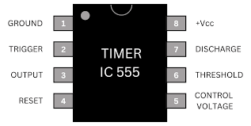

The 555 timer handles logic, timing and other tasks in a circuit. It can operate in two modes, time delay, where timing intervals are set externally, and oscillator mode, where frequency and duty cycles are controlled by resistors and a capacitor.

Above is a diagram of the 555 timer, with the pin configuration, showing
pin 1 is GND (Ground),
pin 2 is TRIGGER (Starts timing when there is a voltage drop),
pin 3 is OUTPUT (The main output pin),
pin 4 is RESET (Forced a low output mode when active),
pin 5 is CONTROL VOLTAGE (Adjusts the threshold reference),
pin 6 is THRESHOLD (Which senses the capacitor voltage),
pin 7 is DISCHARGE (Discharges the timing capacitor),
and pin 8 is VCC (Which supplies voltage)